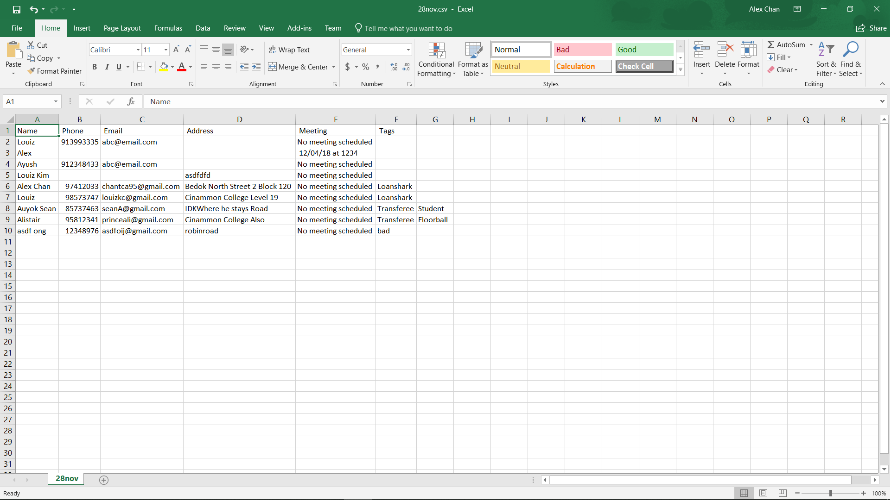

Overview
'Ren' in Mandarin translates to 'person' or 'people', and true to our name, this app is all about managing one’s network of clients in an organized, efficient and intuitive manner. InsuRen is geared to the needs of the modern Insurance salesman, but anyone whose business is their strong rapport with their clients will find this to be an indispensable tool.
Summary of contributions
-
Code contributed: Project Code Dashboard
-
Major enhancement: added the ability to import contacts from a CSV file
-
What it does: allows the user to import contacts into InsuRen from a previously appropriately-formatted Excel CSV file.
-
Justification: This feature makes it convenient for users who want to populate their own InsuRen apps with existing lists of contacts. Rather than manually copying and adding contacts one by one into InsuRen, users can instead simply format their contact lists into a CSV as shown in the user guide, and import them into InsuRen in one go.
-
Highlights: This enhancement uses a new Command, ImportCommand. Users can choose CSV files using a mouse and file browser, or if they are familiar with pathing formats on their respective Operating Systems, they can also enter the path (either relative and absolute) of the required CSV.
-
Credits: none
-
-
Minor enhancement: added the ability to export InsuRen data into a CSV file
-
What it does: allows the user to export the current contacts in InsuRen into a new CSV file, whose name is given by the user.
-
Justification: This feature allows for convenient movement of a user’s contact list. Some usages include keeping a back up of one’s contact list, allowing one to view his InsuRen data on mobile platforms, etc.
-
Highlights: This enhancement uses a new Command, ExportCommand.
-
Credits: http://javaonlineguide.net/2014/10/compare-two-files-in-java-example-code.html
-
-
Other contributions:
-
Project management:
-
Ensured high test coverage, thorough tests
-
-
Enhancements to existing features:
-
Added Coloured Tags
-
Import works based on Add Command - adding multiple Contacts based on csv files
-
Export utilizes the current state of the Model to create an csv file.
-
-
Documentation:
-
Community:
-
Contributions to the User Guide
Given below are sections I contributed to the User Guide. They showcase my ability to write documentation targeting end-users. |
Mass import contacts: import
Import contacts from a csv file.
If no file path is given, a file browser will open for users to navigate to their desired file (.txt and .csv only)
If a file path is given, InsuRen will attempt to obtain and read the file specified by the given file path.
Format: import
Shorthand: i
Example (user does not provide a file path):
-
import -
A file browser will pop up as shown below:

Example (user provides a file path):
-
FOR WINDOWS:
-
import l/D:/AddressbookCorrect.csv(absolute pathing) or -
import l/AddressbookCorrect.csv(relative pathing - if you save the .csv file in the same directory as the .jar file).
-
-
FOR MAC:
-
import l//FILEPATH(absolute pathing - note the double slashes) or -
import l/AddressbookCorrect.csv(relative pathing).
-
-
Regardless which method is used, InsuRen will load contacts from the given csv file.
-
Each contact’s Name, Phone, Email, Address, Meeting and Tag(s) fields must be keyed in the csv in that order.
-
All fields are optional, except for Name. Contacts with no Address, Phone etc. must have those fields left BLANK. Ie. the corresponding Excel cell MUST have nothing in it.
-
Any invalid entries (contacts with no name) will be ignored.
-
Examples of properly formatted csv files are shown below. (Can be both csv or txt)
Export contact list: export
Exports the current contact list into a csv file whose name is given as the second argument. The export file
can be found in the root directory of the project/application.
Format: export DESTINATION_FILE_NAME.csv
Shorthand: x
Example:
-
export 28Nov.csv
InsuRen contacts are exported to28Nov.csv
Contributions to the Developer Guide
Given below are sections I contributed to the Developer Guide. They showcase my ability to write technical documentation and the technical depth of my contributions to the project. |
Import feature
Current Implementation
The import contacts feature is facilitated by the new Command, import. It adds a list of contacts from a properly formatted csv file
to AddressBook. The rules pertaining to accepted formatting of csv files can be found in the user guide. Additionally, it
implements the following operations:
-
getFileFromUserInput(String)— gets a File from the path indicated by a user’s text input. -
getFileFromFileBrowser()— gets a File via a file browser. -
parseFile(File) and parseLinesFromFile(BufferedReader)— parses the file from either of the above two methods. Prepares an arrayList of Persons to add to the contact list.
Given below is an example usage scenario and how the import mechanism behaves at each step.
Step 1. The user launches an application and there is either a list of existing contacts or the list is empty.
Step 2. The user executes import command (i for shorthand). If the user ONLY types import, a file browser wlil pop up. If the user includes a file path, InsuRen will attempt to retrieve the file from the given path.
Step 3. If no such file exists, InsuRen will report an error.

Step 4. If the file is successfully loaded (regardless of method), InsuRen checks for duplicates and incomplete contacts.
Insuren compiles a list of contacts and runs the add Command on all of them, adding them to the list of existing contacts.
Step 5. A relevant message will be displayed, depending on whether there were successful imports, duplicate contacts etc.

The following activity diagram summarizes what happens when a user executes the Import Command:
The following sequence diagram shows what happens when a user executes the Import Command (user input mode only,
file browser mode omitted):

Design Considerations
Aspect: How import executes
-
Alternative 1 (current choice): Build from
Addcommand: Import makes use of thehasPersonmethod ofModelto check for duplicate contacts in the csv file being imported. It also manually checks if any entry in the csv file is incomplete in that it has no name value. Lastly, the import command also utilizes the format checking methods inName,Email,Addressetc. to catch any entries with invalid formats-
Pros: Easy to implement, any future modifications to Add or any changes to the validity of
Name,Emailetc will not cause import to crash. -
Cons: Higher coupling. === Use Case: Mass import contacts into InsuRen
-
MSS
-
User requests to add import contacts from a file in a user-given directory.
-
InsuRen loads new contacts from import file, appending the new contacts to the end of the existing contact list.
Use case ends.
Extensions
-
1a. File does not exist at directory path or invalid file type (must be .csv or .txt)
-
1a1. InsuRen shows an error message.
Use case resumes at step 1.
-
Export feature
Current Implementation
The export contacts feature is facilitated by the new Command, export. It takes the current list of contacts in InsuRen
and exports it as a csv file, whose file name is given by the user and MUST end with .csv. The exported contact list will be
saved in the root directory of the project. export implements the following operations:
-
parse(String)- parses the user’s given file name String and checks if it is valid. -
populateFile(PrintWriter, Model)- populates the (already initialized) file with data from the current Model. -
insertPersonIntoCsv(Person, PrintWriter) and cleanEntry(String)- these two methods add contacts to the csv in the same order as they are displayed in InsuRen. Fields are cleaned by removing commas and brackets before being inserted in to the csv.
Given below is an example usage scenario and how the export mechanism behaves at each step.
Step 1. The user launches an application and there is either a list of existing contacts or the list is empty.
Step 2. The user executes export command (x for shorthand), followed by FILE_NAME. If no file name is given or the file name does not end with .csv, InsuRen throws an error message.
Step 3. InsuRen fetches the current contact list, creates a new .csv file and copies all contacts into it.
The following activity diagram summarizes what happens when a user executes the Export Command:
The following sequence diagram shows what happens when a user executes the Export Command:

Design Considerations
Aspect: How export executes
-
Alternative 1 (current choice): Read contacts from a ReadOnlyAddressBook: Export makes use of model.getAddressBook() and the getPersonList method within.
-
Pros: Easy to implement. Since we are only dealing with a ReadOnlyAddressBook, the state of InsuRen will not be altered.
-
Cons: Only able to capture snapshots of the contact list. Not dynamically updated. === Use Case: Export contact list from InsuRen
-
MSS
-
User requests to export current state of InsuRen to a csv file whose name is given by the user.
-
InsuRen compiles all contacts into a csv (with the given name), saves it in the root project/application directory.
Use case ends.
Extensions
-
1a. No file name given, or given file name does not contain .csv suffix
-
1a1. InsuRen shows an error message.
Use case resumes at step 1.
-
Importing contacts
-
Importing a fresh list of contacts into an empty InsuRen.
-
Prerequisites: clear all persons using the
clearcommand. No persons in the list. Also ensure that there is a populated csv file within the application’s ROOT directory. An example of an acceptable csv is shown in the user guide. Let’s call this file asdf.csv -
Test case:
import l/asdf.csv
Expected: InsuRen will be populated with the contacts in asdf.csv.
-
-
Importing a contact into InsuRen when such contacts are already in InsuRen.
-
Prerequisites: Take the starting point of this test to be the end of the previous - ie. after you have successfully imported contacts from asdf.csv.
-
Test case:
import
Expected: A file browser will pop up. Navigate to and select asdf.csv one more time. Error messages should be displayed, stating that no contacts have been imported as InsuRen has found duplicate contacts.
-
-
Importing invalid contacts into InsuRen.
-
Prerequisites: Clear InsuRen like in (1) above, then deliberately corrupt some of the entries in asdf.csv by removing names or giving invalid phone numbers, meetings etc.
-
Test case:
import l/asdf.csv
Expected: Valid contacts will be imported into InsuRen. Additionally, an error will be displayed, stating that InsuRen has found invalid contacts.
-
Exporting contacts
-
Exporting InsuRen’s current contacts into a new csv file.
-
Prerequisites: Ensure that InsuRen has at least 1 contact.
-
Test case:
export contacts.csv
Expected: A new contacts.csv file will appear in the ROOT directory, populated with InsuRen’s current contacts.
-
-
Exporting into an invalid file.
-
Prerequisites: Ensure that InsuRen has at least 1 contact.
-
Test case:
export asdf
Expected: Error message will be thrown by InsuRen, stating that an incorrect export file name has been provided.
-